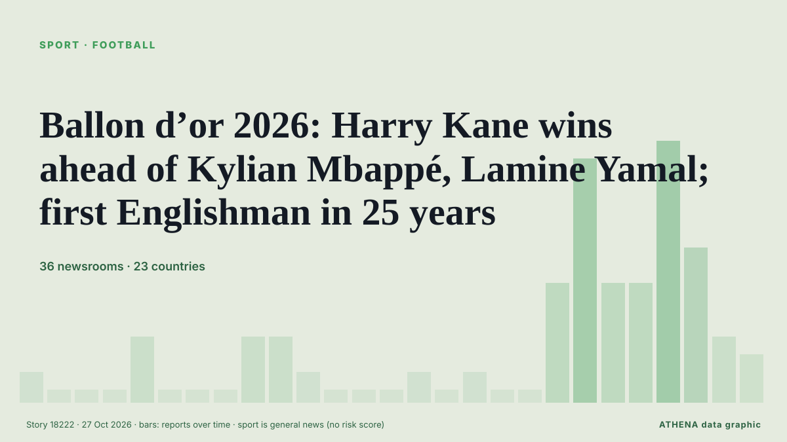

الرياضةبطاقة عنوان. 36 وسيلة إعلام في 23 دولة التغطية: تقارير كل 6 ساعات
Ballon d’or 2026: Harry Kane wins ahead of Kylian Mbappé, Lamine Yamal; first Englishman in 25 years

The 2026 Ballon d'Or winner will be announced on Monday night at a glittering ceremony in London. من The National
باختصار
نشرته بشكل مستقل 36 مصدرًا في 23 دولة منذ 21 أكتوبر، وأول من نشره The National؛ والتغطية هدأت. تُؤرشف أخبار الرياضة والثقافة دون تقييم للمخاطر. الثقة 91٪ (مرتفعة)، وعدد المصادر المستقلة المؤكِّدة: 36، بمتوسط موثوقية للمصادر يبلغ 74٪.
ما الذي تغيّر: 27 تقارير جديدة من 19 غرف أخبار خلال 24 ساعة حتى 27 أكتوبر.
العنوان الأول: Kane primed to pip Yamal, Mbappe to Ballon d'Or glory
تُعرض العناوين بالإنجليزية كما نُشرت.
نظرة سريعة
6.1الأهمية
—بدون تقييم للمخاطر
91%الثقة
اختير وقُيِّم وكُتب وفق منهجية ATHENA المنشورة. لا يتدخل أي محرر في الأحداث بعينها. كيف يُنتَج ›
| 21 Oct 04:30 UTC | 1 |
|---|---|
| 21 Oct 10:30 UTC | 0 |
| 21 Oct 16:30 UTC | 0 |
| 21 Oct 22:30 UTC | 0 |
| 22 Oct 04:30 UTC | 3 |
| 22 Oct 10:30 UTC | 0 |
| 22 Oct 16:30 UTC | 0 |
| 22 Oct 22:30 UTC | 0 |
| 23 Oct 04:30 UTC | 3 |
| 23 Oct 10:30 UTC | 3 |
| 23 Oct 16:30 UTC | 1 |
| 23 Oct 22:30 UTC | 0 |
| 24 Oct 04:30 UTC | 0 |
| 24 Oct 10:30 UTC | 0 |
| 24 Oct 16:30 UTC | 1 |
| 24 Oct 22:30 UTC | 0 |
| 25 Oct 04:30 UTC | 1 |
| 25 Oct 10:30 UTC | 0 |
| 25 Oct 16:30 UTC | 0 |
| 25 Oct 22:30 UTC | 6 |
| 26 Oct 04:30 UTC | 13 |
| 26 Oct 10:30 UTC | 6 |
| 26 Oct 16:30 UTC | 6 |
| 26 Oct 22:30 UTC | 14 |
| 27 Oct 04:30 UTC | 8 |
| 27 Oct 10:30 UTC | 3 |
| 27 Oct 16:30 UTC | 2 |
لماذا هذه الأرقام
الأهمية
الامتداد — الدول التي تغطيه
الاتساع — وسائل إعلام مختلفة
الجِدّة
التنوع — المناطق وأنواع وسائل الإعلام
الخطر
—
الثقة
وسائل إعلام مستقلة
موثوقية المصادر
الدول
الاستقرار
اتساق التصنيف
التغطية — من نشر الخبر ومتى
العنوان كما نُشر · يفتح الأصل- The National · الإمارات العربية المتحدة · United Arab EmiratesBallon d’Or 2026: Nominees, favourites, ceremony date and how to watch
- The National · الإمارات العربية المتحدة · United Arab EmiratesBallon d'Or 2026 predictions: Who will be crowned the world's best footballer?
- DW English · ألمانيا · GermanyHarry Kane: Ballon d’Or for Bayern Munich striker
- Punch · نيجيريا · NigeriaRice backs Kane to win 2026 Ballon d’Or
- Asharq Al-Awsat (English) · المملكة العربية السعودية · Saudi ArabiaComplete Kane Hopes for 'Special Night' as Ballon d'Or Rumors Swirl
- Al Jazeera English · قطر · QatarHarry Kane hopes Ballon d’Or produces ‘special night’ in hometown
- Punch · نيجيريا · NigeriaMy wife eager to know Ballon d’Or result, says Kane
- Vanguard · نيجيريا · NigeriaBallon d’Or 2026: Yamal charters private jet for London ceremony
- Arab News · المملكة العربية السعودية · Saudi ArabiaYamal and Mbappé face off in clasico one day before Ballon d’Or winner is revealed
- IOL · جنوب أفريقيا · South AfricaHarry Kane eyes 'special night' as favourite for Ballon d'Or in London home
- The Rio Times · البرازيل · BrazilEcuador Defender Eyes Ballon D’Or on 26 Oct
- The National · الإمارات العربية المتحدة · United Arab EmiratesBallon d’Or 2026: The five most historic winners – from Matthews to Messi
- Evening Standard (London) · المملكة المتحدة · United KingdomBallon d'Or odds: Kane remains odds-on to claim top prize despite Mbappe betting surge
- Punch · نيجيريا · NigeriaNigerians missing as 2026 Ballon d’Or winner emerges today
- Oman Observer · عُمان · OmanKane primed to pip Yamal, Mbappe to Ballon d'Or glory
- Express Tribune · باكستان · PakistanKane favourite for Ballon d'Or
- Vanguard · نيجيريا · NigeriaKane primed to beat Yamal, Mbappe to Ballon d’Or glory
- Al Jazeera English · قطر · QatarBallon d’Or 2026 predictions: Yamal, Mbappe and Kane – who will win?
- France 24 English · فرنسا · FranceMbappé, Kane and Yamal top favourites list in wide open 2026 Ballon d’Or race
- IOL · جنوب أفريقيا · South AfricaKane primed to pip Yamal, Mbappe to Ballon d'Or glory
- Türkiye Today · تركيا · TurkeyHarry Kane leads Ballon d'Or race as Yamal, Mbappe challenge for 2026 award
- Korea Herald · كوريا الجنوبية · South KoreaKane favored over Yamal, Mbappe for Ballon d'Or
- Vanguard · نيجيريا · NigeriaKane primed to pip Yamal, Mbappe to Ballon d’Or glory
- MyJoyOnline · غانا · GhanaJoy Sports journalists make Ballon d’Or 2026 predictions
- Asharq Al-Awsat (English) · المملكة العربية السعودية · Saudi ArabiaKane Primed to Pip Yamal, Mbappe to Ballon d'Or Glory
- Evening Standard (London) · المملكة المتحدة · United KingdomWho will win 2026 Ballon d'Or? Latest odds as Harry Kane faces late Kylian Mbappe surge
- Gulf News · الإمارات العربية المتحدة · United Arab EmiratesKylian Mbappe vs Harry Kane vs Lamine Yamal stats comparison: Who has the better numbers for Ballon d'Or 2026?
- Gulf News · الإمارات العربية المتحدة · United Arab EmiratesBallon d'Or 2026: When, where to watch, timings, favourites and how voting works
- Sky News (World) · المملكة المتحدة · United KingdomWill Harry Kane win tonight's Ballon d'Or?
- RFI English · فرنسا · FranceMbappé, Yamal or Kane? Ballon d’Or verdict due in London
- Evening Standard (London) · المملكة المتحدة · United KingdomBayern 'work to remove Tottenham clause' in Harry Kane contract ahead of Ballon d'Or
- The Scotsman · المملكة المتحدة · United KingdomBallon d'Or 2026 Odds: Who is favourite to win the award? Latest odds on Harry Kane, Kylian Mbappe, Lamine Yamal
- Times of India · الهند · IndiaBallon d'Or: Messi, Yamal and Mbappe among favourites; how the winners are decided
- Evening Standard (London) · المملكة المتحدة · United KingdomBallon d'Or 2026 LIVE: Latest updates and results as Harry Kane beats Kylian Mbappe in London
- Channels TV · نيجيريا · NigeriaKane Tipped To Beat Yamal, Mbappe To Ballon d’Or Glory
- Punch · نيجيريا · NigeriaMbappé, Yamal, Kane, Olise battle for Ballon d’Or in London
- Sky News (World) · المملكة المتحدة · United KingdomHarry Kane ends England's 25-year wait to win men's Ballon d'Or
- WalesOnline · المملكة المتحدة · United KingdomHow to watch Ballon d'Or 2026 ceremony for free - start time and live stream
- Evening Standard (London) · المملكة المتحدة · United Kingdom'Harry Kane wins 2026 Ballon d'Or': Final result 'leaked' as rankings are announced
- Nile Post · أوغندا · UgandaKane prematurely announced as Ballon d'Or winner